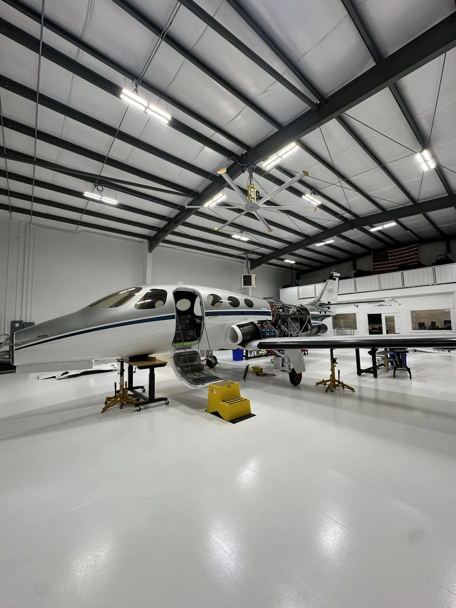

Stratos Aircraft
Flight controls and structural systems, with mechanical design, drafting, and manufacturing support.

My work
- Designed and drafted components for flight controls, landing gear, and other aircraft subsystems.
- Drafted and revised more than 100 part and assembly drawings to FAA and internal engineering standards.
- Worked directly with welders, machinists, and technicians to align designs with fabrication capabilities.
- Incorporated structural review feedback, FEA, and test results into design revisions.
- Owned four to six design, DFM, or drafting projects per week, reporting progress to senior engineers and leadership.
The internship also gave me practical exposure to FAA certification processes and mechanical airworthiness.
A recorded landing gear mechanism test during my Stratos internship.
A recorded flame-testing setup during my Stratos internship.